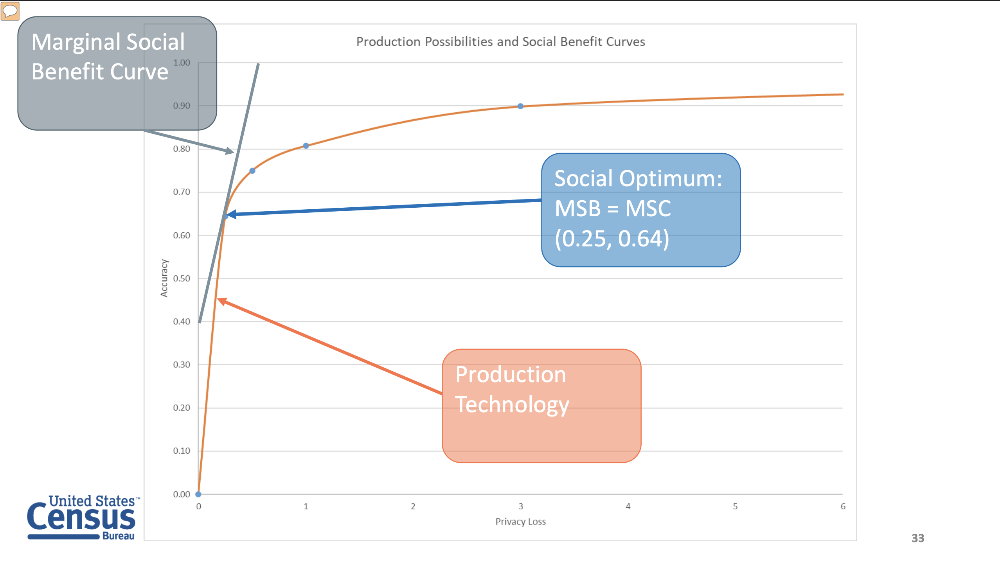
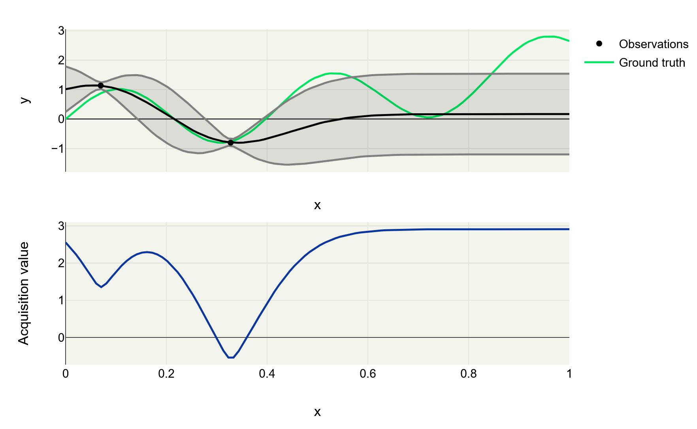

Stop Guessing: Discover Optimal Trade-offs in Your ML Models
Andrei Paleyes
AutoML Seminar
January 2026
| Brendan Avent | Bogdan Ficiu | Emile Ferreira |
Discovering and navigating trade-offs in ML models...
Sounds familiar?
"Multi-Objective AutoML: Towards Accurate and Robust models", Jan van Rijn, AutoML seminar, 16 Oct 2025
Today's highlights
3 objectives: fairness, privacy, energy efficiency
Multi-objective Bayesian Optimisation (MOBO)
Step-by-step guide!
Two models dilemma
- 96% accuracy
- 15 samples per juole
- 89% accuracy
- 21 samples per juole
Option 1: grid or random search

Option 2: constrained optimisation

Can we discover an entire trade-off surface?
Pareto front
"Disclosure avoidance for block level data and protection of confidentiality in public tabulations.", John M. Abowd, Census Scientific Advisory Committee (Fall Meeting), 2018
Option 3: Multi-objective Bayesian optimisation (MOBO)

Image source: "High-Dimensional Bayesian Multi-Objective Optimization", Gaudrie, 2019
Bayesian optimisation recap
Image source: "Bayesian Optimization and Active Learning Cookbook", Sam Lishak, Physics X, 2025
MOBO: differences
Assuming 2 objectives- f(x) = (y1, y2)
- Model: multi-output GPs or 2 single-output GPs
- Hypervolume-based acquisition function
"Multiobjective optimization of expensive-to-evaluate deterministic computer simulator models", Svenson and Santner, Computational Statistics & Data Analysis, 2016